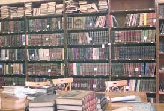
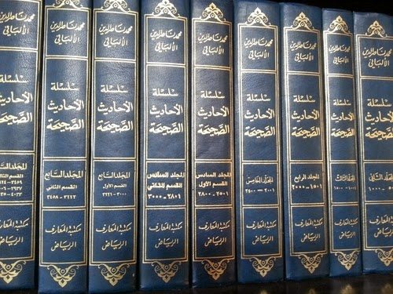

Kisah Hidup Syaikh al-Albani, Pakar Hadits Abad Ini (2/2)
Di Perpustakaan Azh-Zhahirah
Perpustakaan azh-Zhahirah menjadi saksi kecintaan Syaikh al-Albani akan membaca dan menilit hadits. Perpustakaan yang merupakan salah satu pusat perbendaharaan ilmu Kota Damaskus itu, menyimpan ribuan arsip, karya tulis, dan buku-buku klasik. Bagi Syaikh al-Albani, perpustakaan ini adalah surga dunia, kegemarannya membaca bisa ia tumpah ruahkan di sana, di tengah ketidak-mampuannya membeli buku-buku.
Perpustakaan azh-Zhahiriyah
Syaikh Al-Albani terus menyibukkan diri dengan ilmu hadits yang ia cintai. Kesibukan yang membuatnya tidak memiliki aktivitas lainnya. Bagi seorang yang kasmaran, tak ada rasa bosan duduk seharian bersama kekasihnya. Terbit dan terbenamnya matahri adalah detik-detik yang tak terasa. Begiulah keadaan Syaikh al-Albani dengan ilmu hadits. Ia duduk 18 jam sehari di perpustakaan azh-Zhahirah mengkaji, meneliti, memberikan komentar, dan men-tahqiq (penelitian ilmiah tentang suatu) riwayat-riwayat hadits. Waktu istirahatnya hanya jam shalat. Karena kesungguhan dan keseriusannya itu, pegawai perpustakaan memberikan ruang khusus untuknya. Agar ia lebih konsentrasi dalam kegiatan ilmiahnya (Hayatu al-Albani wa Atsaruhu wa Tsana-u al-Ulama ‘Alaihi oleh Muhammad Ibrahim asy-Syaibani, Hal: 51-52).
Jika Anda melihat orang sukses atau ahli di bidang tertentu, jangan hanya kagum dengan pencapaian mereka. Lihatlah bagaimana usaha mereka mendapatkannya. Mereka mendapatkannya dengan kesungguhan dan jerih payah. Syaikh al-Albani duduk membaca 18 jam sehari bahkan lebih. Sehingga ia mencapai kedudukannya sekarang. Berapa lama waktu yang Anda habiskan untuk membaca dalam sehari? Atau berlatih melakukan suatu bidang yang Anda tekuni?
“Kalau bukan karena rintangan, semua orang akan jadi tokoh yang sukses. Kedermawanan bisa menyebabkan kemiskinan. Dan maju ke medan perang mengundang kematian.
Penjara Yang Sama dengan Ibnu Taimiyah
Di sela-sela kesibukkannya menelaah buku-buku dan menulis, Syaikh al-Albani rahimahullah juga meluangkan waktu untuk berdakwah. Dalam satu perjalanan dakwahnya, terjadilah dialog dan diskusi antara dirinya dengan ulama dan imam-imam masjid. Hingga akhirnya ia dicap sebagai seorang Wahabi yang sesat. Para imam-imam masjid menyuarakan pengingkaran terhadap al-Albani di mimbar-mimbar masjid. Hingga ia diboikot dari menyampaikan pelajaran di masjid-masjid Damaskus, Aleppo, Latakia, dan kota-kota Suriah lainnya.
Desas-desus tentang Syaikh al-Albani semakin liar, hingga ia difitnah hendak melakukan makar terhadap pemerintah. Kontan, pemerintah Suriah yang sangat sensitif dengan isu ini segera menahannya. Al-Albani pun mendekam di penjara Damaskus pada tahun 1967. Penjara yang sama dengan Ibnu Taimiyah rahimahullah. Saat di penjara, ia menegakkan kembali shalat berjamaah dan Jumat yang telah hilang di sana. Ada yang mengatakan, tidak lagi ditegakkan shalat jamaah dan Jumat setelah masa Ibnu Taimiyah hingga al-Albani masuk penjara (Hayatu al-Albani wa Atsaruhu wa Tsana-u al-Ulama ‘Alaihi oleh Muhammad Ibrahim asy-Syaibani, Hal: 51-52).
Perjalanan Dakwah Sang Ulama
Syaikh al-Albani hampir mengunjungi semua kota di Suriah dalam rangka kunjungan dakwah. Aleppo, Idlib, Latakia, Hama, Homs, dll sudah ia hampiri. Ia juga pernah datang ke wilayah-wilayah di Jordania, Libanon, Kuwait, Uni Emirat Arab, Qatar, Arab Saudi, Palestina, Mesir, Maroko, Spanyol, dll.
Dalam setiap kunjungan tersebut Syaikh al-Albani selalu memberikan ceramah, menjawab pertanyaan, dan memberikan fatwa. Biasanya kegiatan-kegiatan itu didokumentasikan dalam bentuk kaset. Selain ceramah secara non formal, Syaikh al-Albani juga memiliki pengalaman mengajar secara formal. Seperti menjadi staf pengajar Universitas Islam Madinah dari awal tahun 1381 H/1961 M sampai akhir tahun 1383 H/1964 M.
Metode dakwahnya tidak hanya dilakukan secara tatap muka, beliau juga sering menjawab pertanyaan-perntanyaan melalui surat dan telepon.
Beliau pernah shalat di Masjid al-Aqsha. Dan berkunjung ke Granada menghadiri Muktamar ath-Thalabah al-Muslimin.
Ada beberapa sunnah yang di masa hidupnya terasa begitu asing, namun beliau populerkan kembali sunnah-sunnah tersebut. Seperti mengerjakan dua shalat Id (Idul Adha dan Idul Fitri) di lapangan. Beliau populerkan hal itu di Damaskus dan Beirut. Kemudian sunnah aqiqah, shalat tarawih di malam Ramadhan dengan 11 rakaat, membaca khotbah hajah pada khotbah Jumat, jilbab yang syar’i, mengingatkan umat agar tidak membangun masjid di atas kuburan dan shalat di dalam masjid yang demikian. Di tahun 60-an tentu sunnah-sunnah tersebut belum dikenal seperti sekarang. Bahkan saat ini, sebagian sunnah itu pun masih terasa asing.
Beliau juga memotivasi para pemuda agar memberi perhatian besar terhadap pengkajian sunnah. Kemudian menciptakan sarana-sarana modern untuk memudahkan masyarakat mempelajari hadits-hadits Nabi ﷺ (A’lam ad-Da’wah Muhammad Nashiruddin al-Albani Muhaddits al-‘Ashr Nashir as-Sunnah oleh Abdullah al-Aqil, Hal: 1063-1064).
Faidah yang dapat kita petik adalah walaupun Sunnah Nabi ﷺ dianggap asing, mulailah dulu melakukannya. Seiring waktu, masyarakat akan mengenalnya.
Menjalin Hubungan Dekat Sesama Ulama
Syaikh al-Albani bertemu dengan banyak ulama dan penuntut ilmu. Beliau belajar dari mereka dan juga sebaliknya. Al-Albani bertemu dan memberi ijazah sanad kepada sejarawan dan muhadits Aleppo, Syaikh Raghib ath-Thabbakh (A’lam ad-Da’wah Muhammad Nashiruddin al-Albani Muhaddits al-‘Ashr Nashir as-Sunnah oleh Abdullah al-Aqil, Hal: 1062).
Beliau juga pernah bertemu Syaikh Hamid al-Faqi ketua Jam’iyah Anshar as-Sunnah al-Muhammadiyah di Mesir dan al-Muadditsh al-Muhaqqiq Ahmad Syakir.
Syaikh al-Albani memiliki hubungan spesial dengan Syaikh Ibnu Baz rahimahullah. Keduanya kadang kala berdiskusi dan saling menyurati.
Dan banyak ulama-ulama lainnya yang pernah bertemu dan memiliki hubungan dekat dengannya. Tidak hanya berasal dari Jazirah Arab, tapi ada juga yang berasal dari India, Turki, Syam, Mesir, Maroko, dll (Hayatu al-Albani wa Atsaruhu wa Tsana-u al-Ulama ‘Alaihi oleh Muhammad Ibrahim asy-Syaibani, Hal: 64-73).
Kepakaran Dalam Bidang Hadits
Seseorang dikatakan seorang ahli, pakar atau maestro dalam suatu bidang dilihat dari karyanya dalam bidang yang ia geluti. Syaikh al-Albani rahimahullah memiliki banyak karya ilmiah dan penelitian dalam bidang hadits. Karya-karyanya tersebar di penjuru dunia dan telah diterjemahkan ke dalam berbagai bahasa. Banyak da’i dan pelajar ilmu agama yang mengambil faidah dari karya-karyanya. Ia pun menjadi rujukan utama, khususnya dalam bidang hadits.
Kepakarannya diakui berbagai kalangan. Di antaranya:
Pertama: Fakultas Syariah Universitas Damaskus memilihnya sebagai orang yang mengecek status sebuah hadits pada Mausu’ah al-Fiqh al-Islami (Ensiklopedi Hukum Islam), khusus bab perdagangan. Universitas menjadikan hasil penelitiannya itu sebagai standarisasi status sebuah hadits pada tahun 1955.
Kedua: Universitas as-Salafiyah di Kota Varnasi, India, memintanya sebagai mentor syaikh-syaikh universitas dalam bidang hadits. Namun Syaikh al-Albani tidak menyanggupi permintaan tersebut.
Ketiga: Pada tahun 1395 H/1975 M sampai 1398 H/1978 M, melalui permintaan Raja Khalid bin Abdul Aziz (Raja Arab Saudi kala itu) meminta Syaikh al-Albani menjadi anggota dewan guru besar (dewan senat) Universitas Islam Madinah.
Kelima: Dewan Fatwa di Riyadh, Arab Saudi, menugaskannya ke Mesir, Maroko, dan Inggris mengadakan kuliah tentang akidah tauhid dan metode beragama Islam yang benar.
Dan masih banyak lagi kegiatan-kegiatan ilmiah Syaikh al-Albani. Semuanya merupakan pengakuan tentang kepakarannya dari lembaga-lembaga besar Islam hingga tingkat internasional (Hayatu al-Albani wa Atsaruhu wa Tsana-u al-Ulama ‘Alaihi oleh Muhammad Ibrahim asy-Syaibani, Hal: 75-76).
Karya Ilmiah
Syaikh al-Albani adalah seorang ulama yang produktif. Banyak karya ia lahirkan dalam rangka berkhidmat memperjuangkan Kitabullah dan Sunnah Rasulullah ﷺ. Karya-karya itum masih bisa kita nikmati hingga hari ini. Lebih dari 100 karya ilmiah ia hasilkan. Ada yang murni tulisannya, ada yang merupakan tahqiq (penelitian ilmiah secara seksama tentang status suatu hadits: shahih, hasan, dhaif, atau maudhu), ta’liq (komentar), dan takhrij (menisbatkan hadits pada sumbernya).
Di antara karya-karyanya adalah:
1. Adabu az-Zifaf fi Sunnati al-Muthahharah.
2. Ahadits al-Isra wa al-Mi’raj.
3. Ahkam al-Jana-iz.
4. Irwa-u al-Ghalil fi Takhrij Ahadits Manar as-Sabil.
5. Al-As-ilatu wa al-Ajwibah.
6. Shifatu Shalat an-Nabi Shallallahu ‘Alaihi wa Sallam min at-Takbir ila at-Taslim Ka-annaka Taraha.
7. Shahih wa Dha’if al-Jami’ ash-Shaghir wa Ziyadatuhu.
8. Shahih as-Sirah an-Nabawiyah.
9. Shahih wa Dha’if at-Targhib wa at-Tarhib.
10. Jilbab al-Mar-ah al-Muslimah.
11. Silsilatu al-Ahadits ash-Shahihah wa Syaiun min Fiqhiha wa Fawa-iduha.
12. Silsilatu al-Ahadits adh-Dha’ifah wa al-Maudhu’ah wa Atsaruha as-Sayyi’ fi al-Ummah.
13. Manzilatu as-Sunnah fi al-Islam.
7 jilid besar kitab Silsilah al-Ahadits ash-Shahihah. Karya ini yang dianggap para ahli membedakan Syaikh al-Albani dengan ahli hadits lainnya. Karena ia memiliki ensiklopedi hadits karyanya sendiri.
Ini beberapa karya ilmiahnya. Bagi Anda yang pernah membaca salah satunya, Anda akan menemukan metodologi yang berbeda dengan penulis-penulis lainnya. Karena kita akan menikmati kajian periwayat-periwayat hadits dalam catatan-catatan kakinya. Di situlah terasa gaya penulisan seorang ahli hadits.
Pujian Ulama Terhadapnya
Syaikh Abdul Aziz bin Baz berkata, “Al-Albani adalah seorang reformis abad ini dalam ilmu hadits.”
Syaikh Muhammad bin Shaleh al-Utsaimin memujinya dengan mengatakan, “Sesungguhnya al-Albani memiliki ilmu yang luas dalam bidang hadits, dirayat dan riwayat-nya. Dialah pakar hadits abad ini.”
Al-Muhaqqiq Muhibuddin al-Khatib mengatakan, “Sesungguhnya al-Albani adalah orang yang menyeru kepada sunnah. Ia mendermakan hidupnya untuk beramal dan menghidupkan sunnah (hadits Nabi ﷺ).
Syaikh Ali ath-Thanthawi mengatakan, “Syaikh Nashiruddin al-Albani lebih berilmu dariku dalam permasalahan hadits. Aku menaruh hormat padanya karena kesungguhannya, semangatnya, dan banyaknya karya tulisnya yang dicetak oleh saudaraku sekaligus orang tuaku (ucapan penghormatan) Zuhair asy-Syawisy. Aku merujuk pada Syaikh Nashir dalam permasalahan hadits dan aku tidak mempertanyakannya karena mengetahui keutamaannya (dalam permasalahan hadits) (A’lam ad-Da’wah Muhammad Nashiruddin al-Albani Muhaddits al-‘Ashr Nashir as-Sunnah oleh Abdullah al-Aqil, Hal: 1068).
Menggabungkan Ilmu dan Amal
Syaikh al-Albani adalah orang yang sangat bersemangat menyelaraskan praktik ibadah dengan sunnah Nabi ﷺ. Baik dalam tata cara ibadah tersebut, jumlahnya, dan waktunya. Syaikh Muhammad bin Shaleh al-Utsaimin mengatakan, “Yang aku kenal dari Syaikh al-Albani dari perjumpaanku dengannya, ia adalah seorang yang sangat bersemangat menyelaraskan amal dengan sunnah dan mengkritik bid’ah. Baik dalam hal akidah atau amal ibadah”.
Tidak jarang ketika mendengar lantunan Alquran atau hadits Nabi ﷺ tentang janji dan ancaman Allah, Syaikh al-Albani menangis. Alquran dan hadits begitu mudah menyentuh hatinya.
Di antara kebiasaan Syaikh al-Albani adalah merutinkan puasa Senin dan Kamis. Saat musim dingin maupun di musim panas. Kecuali apabila ia sakit atau sedang bersafar. Saat memasuki hari Jumat, ia senantiasa shalat dua rakaat, dua rakaat, hingga khotib naik ke mimbarnya. Ia berhaji dan berumrah setiap tahun, jika tidak ada yang menghalanginya. Terkadang beliau berumrah dua kali dalam setahun. Ia berhaji sebanya 30 kali (al-Imam al-Albani Durus wa Mawaqif wa ‘Ibar oleh Abdul Aziz bin Muhammad as-Sadhan, Hal: 88).
Tentu haji ketika itu tidak seperti sekarang. Sehingga lebih memungkinkan dilakukan berulang kali.
Murid-Muridnya
Murid-murid Syaikh al-Albani tersebar luas di dunia Islam. Beberapa yang masyhur di antara mereka adalah:
- Syaikh Muqbin bin Hadi al-Wadi’i,
- Syaikh Muhammad bin Jamil Zainu,
- Syaikh Husein al-Awaisyah,
- Syaikh Ali Hasan al-Halaby,
- Syaikh Masyhur Hasan Salman,
- Syaikh Salim bin Id al-Hilay,
- Syaikh Muhammad Ibrahim asy-Syaibani,
- Syaikh Hamdi bin Abdul Majid as-Salafy, dll (Hayatu al-Albani wa Atsaruhu wa Tsana-u al-Ulama ‘Alaihi oleh Muhammad Ibrahim asy-Syaibani, Hal: 94-106).
Wafatnya Sang Mujaddid
Di akhir hayatnya, Syaikh al-Albani menderita beberapa penyakit. Dengan keadaan itu, beliau tetap sabar dan berharap pahala dari Allah ﷻ. Di antara penyakit yang beliau idap adalah Anemia, gangguan hati dan ginjal. Kondisi ini tidak membuatnya beristirahat. Ia tetap meneliti dan mengkaji hadits. Sampai-sampai ketika tidur, orang-orang mendengarnya mengigau, “Berikan aku buku al-Jarh wa at-Ta’dil, juz sekian dan halaman sekian” dan ia menyebut nama-nama buku yang lain.
Hal itu dikarenakan semangatnya dalam membaca dan meneliti. Hingga dalam buku-buku itu terbawa ke dalam mimpi (Shafahat Baidha min Hayati al-Albani oleh Athiyah Audah, Hal: 93-94).
Setelah mengisi hidupnya dengan ilmu, amal, dan dakwah, juga mengidap beberapa penyakit, Syaikh al-Albani pun wafat. Beliau wafat pada hari Sabtu 22 Jumadil Akhir 1420 H/ 2 Oktober 1999 M. Pada hari itu pula prosesi jenazahnya diselesaikan. Hal ini merupakan wasiatnya agar menyegerakan pemakamannya. Karena yang demikianlah yang terbaik menurut tuntunan (sunnah) Nabi ﷺ. Muridnya, Muhammad bin Ibrahim Syaqrah menjadi imam shalat jenazahnya. Beliau dimakamkan setelah shalat Isya (al-Imam al-Albani Durus wa Mawaqif wa ‘Ibar oleh Abdul Aziz bin Muhammad as-Sadhan, Hal: 292).
Semoga Allah merahmati Syaikh al-Albani dengan rahmat yang luas. Menempatkannya di surga-Nya yang tertinggi. Membalas jasa-jasanya berkhidmat kepada Sunnah Nabi ﷺ.